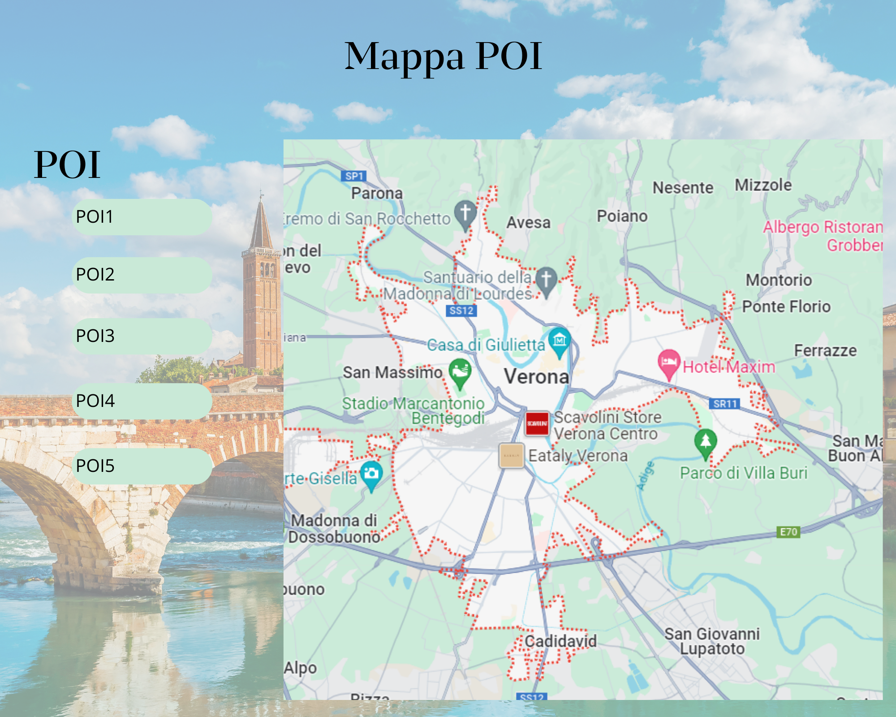
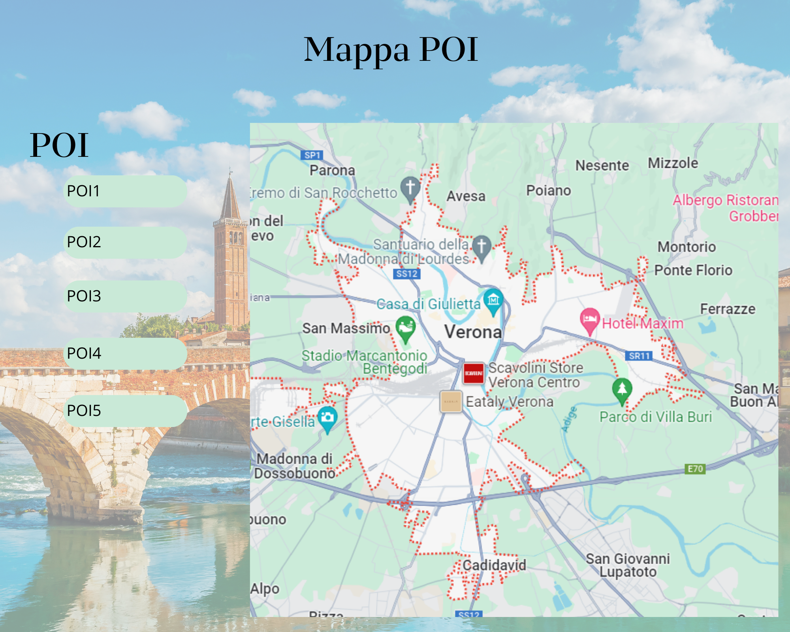

Documentazione
Point of Interest Verona
In questo progetto l'amministratore potrà aggiungere e/o eliminare un punto di interesse di Verona. L'utente potrà visualizzare i punti di interesse in due modalità: mappa o elenco
- Classe/Anno: 5Binf - 23/24
- Author: Dalla Nave, Grenci, Rossi
- Creato: 24 novembre 2023
- Ultima modifica: 12 Dicembre 2023
Architettura informazione

UML
Diagramma di Casi d'uso

Diagramma di oggetti

Diagramma di Stato

Diagramma di Sequenza

Contenuti del progetto
La casa di Giulietta


La casa di Giulietta è un edificio civile medievale situato in via Cappello a Verona, a breve distanza
dalla centrale piazza delle Erbe. Si tratta di uno dei luoghi shakespeariani di Verona.
L'edificio che ospita la casa di Giulietta è una casatorre di origine medievale, la cui presenza è
attestata per la prima volta in documenti datati al 1351. Nella casatorre era presente la locanda "del
Cappello", di proprietà degli eredi di Antonio Cappello, testimoniata anche dalla presenza dello stemma
del copricapo sulla chiave di volta dell'arco che affaccia verso il cortile interno. Fu proprio a causa
dello stemma del cappello che tra XVIII e XIX secolo, quando si svolse la ricerca dei luoghi legati alla
tragedia shakespeariana, l'edificio venne erroneamente associato alla famiglia Capuleti, ovvero i
Cappelletti presenti (insieme ai Montecchi) nel Purgatorio di Dante Alighieri. Nonostante la proprietà
cambiò diverse volte nel corso dei secoli, l’edificio mantenne la funzione di locanda, a cui si
aggiunsero
alcune botteghe artigiane
Fonte
Piazza dei signori


Piazza dei Signori, conosciuta anche come Piazza Dante, è
una piazza situata nel centro storico di Verona, adiacente a
piazza delle Erbe. La piazza nasce nel Medioevo dallo sviluppo dei palazzi scaligeri, ed assume fin
dall'inizio funzioni politiche, amministrative e di rappresentanza.
Piazza dei Signori fu il centro
del potere della Verona Medievale e Veneziana, dal XII secolo alla fine del XVIII. Sulla piazza si
affacciano palazzi di varie epoche e stili, in passato sedi di istituzioni di governo, che ne fanno oggi
una delle piazze più belle d'Italia.
«Lì sono le gran corte d'i Signori
in loco de la eccelsa Signoria:
alcuni si è del popolo pretori,
et altri ha la milizia in sua bailia
(e questi sono in dignità magiori);
et altri tende a la tesoraria,
e hano i lor palazi tanto onore,
che basterebe a Iulo imperatore.»
(Francesco Corna da Soncino)
Fonti:
Wikipedia
veronissima
Basilica di San Zeno


La Basilica di San Zeno è uno dei principali luoghi di culto cattolici di Verona e rappresenta
un esempio significativo di architettura romanica. Costruita nel X secolo, la sua storia è intrinsecamente
legata a San Zeno, vescovo di Verona e santo patrono della città. L'edificio attuale, sebbene abbia
subito diverse trasformazioni nel corso dei secoli, conserva molte caratteristiche romaniche.
La facciata è particolarmente notevole, con un portale decorato da sculture di stile romanico e da
un magnifico rosone che domina la parte superiore. All'interno, la basilica presenta una pianta a tre
navate, divise da colonne di marmo con capitelli scolpiti. Il capolavoro artistico principale della
basilica è il Polittico di San Zeno, opera di Andrea Mantegna, risalente al XV secolo.
Questo dipinto è collocato sull'altare maggiore e raffigura diverse scene della vita di San Zeno,
contribuendo ad arricchire il patrimonio artistico e culturale della basilica. Un altro elemento
di rilievo è la cripta, contenente le reliquie di San Zeno. Questo spazio sotterraneo è decorato
con affreschi medievali che narrano episodi della vita del santo e aggiungono ulteriore
fascino alla visita della basilica. La Basilica di San Zeno è anche famosa per la sua torre campanaria,
che offre una vista panoramica sulla città di Verona. La torre, costruita in mattoni, è stata eretta
in diverse fasi e rappresenta un elemento iconico nel panorama cittadino.
Piazza delle Erbe


Piazza delle Erbe o piazza Erbe è la piazza più antica di Verona e si trova sopra l'area del Foro romano.
Nell'età romana era il centro della vita politica ed economica; con il tempo gli edifici romani hanno
lasciato il posto a quelli medievali.
Il lato nord è occupato dall'antico palazzo del Comune, dalla Torre dei Lamberti, dalla Casa dei Giudici e
dalle case dei Mazzanti. Il Iato ovest, quello più corto, è chiuso dal barocco Palazzo Maffei, adornato da
diverse statue di dei greci: Giove, Ercole, Minerva, Venere, Mercurio e Apollo. La parte nord-occidentale
della piazza era l'area del Campidoglio romano, che guardava verso il Foro. Molte abitazioni conservano
resti di pitture a fresco. Lungo il lato sud si incontra la Casa dei Mercanti o Domus Mercatorum, un tempo
sede della Banca Popolare di Verona. Le altre case, più anonime, ricordano per il rapporto
altezza-larghezza le case-torri di origine comunale. Fra il 1884 e il 1951 la piazza fu interessata dai
binari della rete tranviaria cittadina.
Il monumento più antico della piazza è la fontana sormontata dalla statua denominata Madonna Verona di
epoca romana (datata 380) con successive integrazioni medievali. La fontana è opera di spoglio voluta da
Cansignorio assemblando pezzi di epoca romana come da tradizione medievale nel periodo gotico in
particolare, con grande vasca termale e statua proveniente dal Capitolium si dice un tempo fosse dorata,
in occasione dell'opera idraulica di Cansignorio di portare l'acqua del torrente Lorì di Avesa fino a
piazza Erbe.
Fonti:
Wikipedia
Arena di Verona


L'Arena di Verona è un anfiteatro romano situato nel centro storico di Verona, icona della città veneta
insieme alle figure di Romeo e Giulietta. Si tratta di uno dei grandi fabbricati che hanno caratterizzato
l'architettura romana ed uno degli anfiteatri antichi giunto a noi con il miglior grado di conservazione,
grazie ai sistematici restauri eseguiti fin dal Cinquecento; proprio per questo motivo, nonostante le
numerose trasformazioni subite, esso consente al visitatore di poter facilmente comprendere la struttura
di questo genere di edifici, rigorosamente soggetti alla funzione cui erano destinati ma dotati comunque
di una essenziale bellezza.
Durante i mesi estivi ospita il celebre festival lirico areniano, le cui stagioni si svolgono
ininterrottamente dal 1913, mentre il resto dell'anno è meta di molti cantanti e musicisti internazionali.
Fonti:
Wikipedia
Ponte di Castelvecchio


Il ponte di Castelvecchio, conosciuto anche come ponte scaligero, è un'opera infrastrutturale e militare
situata a Verona lungo il fiume Adige, parte della fortezza di Castelvecchio e ritenuto l'opera più audace
e mirabile del Medioevo veronese. Venne distrutto durante la seconda guerra mondiale e ricostruito nel
1951.
Il ponte, appartenente al complesso di Castelvecchio, risulta essere un'opera ardita per il periodo in cui
venne costruita. L'arcata maggiore è da alcuni studiosi considerata addirittura la più grande in Europa al
tempo della sua costruzione, e aveva una dimensione utile ad agevolare il passaggio delle imbarcazioni. Il
diverso dimensionamento dell'ampiezza degli archi e della mole dei piloni è da ricondurre ad uno studio
della diversa distribuzione delle correnti in questo meandro del fiume; questo disegno particolare del
ponte, ideato da un punto di vista prettamente funzionale e strutturale, ha comunque determinato una
soluzione figurativa gotica e inedita.
Fonti:
Wikipedia
Basilica di Santa Anastasia


La chiesa di San Pietro da Verona in Santa Anastasia, meglio conosciuta come basilica di Santa Anastasia,
è un importante luogo di culto cattolico che sorge nel cuore del centro storico di Verona; essa si situa
nell'area terminale del decumano massimo della città d'epoca romana, in prossimità del punto in cui
l'ampio meandro del fiume Adige è tagliato dal ponte Pietra, dove gravitano quindi quelle che furono le
due principali vie di comunicazione cittadina, stradale e fluviale. Si tratta della più grande, solenne e
rappresentativa chiesa veronese, riflesso di un vivace momento della vita cittadina, in cui l'allargamento
e il consolidamento delle istituzioni politiche ed economiche consentirono alla comunità, in sinergia con
la signoria scaligera, il clero domenicano e la famiglia Castelbarco, di prodigarsi in un notevole sforzo
finanziario atto a edificare questo importante tempio, simbolo della loro potenza.
Fonti:
Wikipedia
Wireframes
 

Il progetto
Il progetto permetterà all'admin (credenziali username:Admin password:admin) di aggiungere, visualizzare o eliminare Punti di interesse. L'utente(con credenziali username:Utente password:topolino) di visualizzare i POI in forma di elenco o mappa, inoltre potrà visualizzare i dettagli di ogni singolo POI.